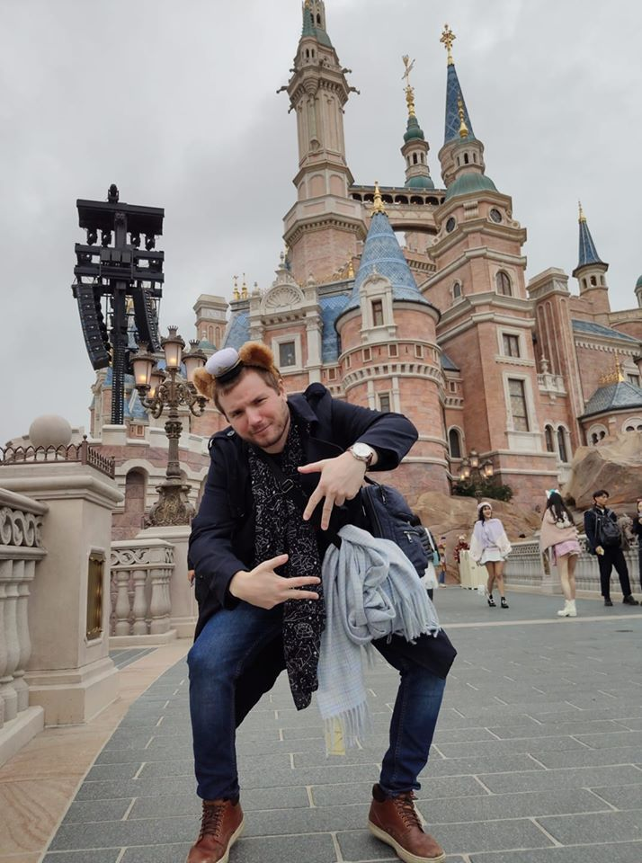

Reports
About me

I'm Joakim Rönning. I was born in Avesta, Sweden, but grew up in Concepción, Chile. I've been into computers since I was but a wee boy. As an adult I've done mostly studying; I studied aerospace engineering (not finished), gastronomy (finished), and now software engineering (finishing). I've worked in restaurants, events and bakeries. Now I'm in Sweden ready for the next step in my life.
I learned programming in high school, doing C++. I've come pretty far, finally forgetting everything I learned there.
I recently got into powerlifting, and even though my lifts are quite light I have found myself really enjoying it.
Catch me around